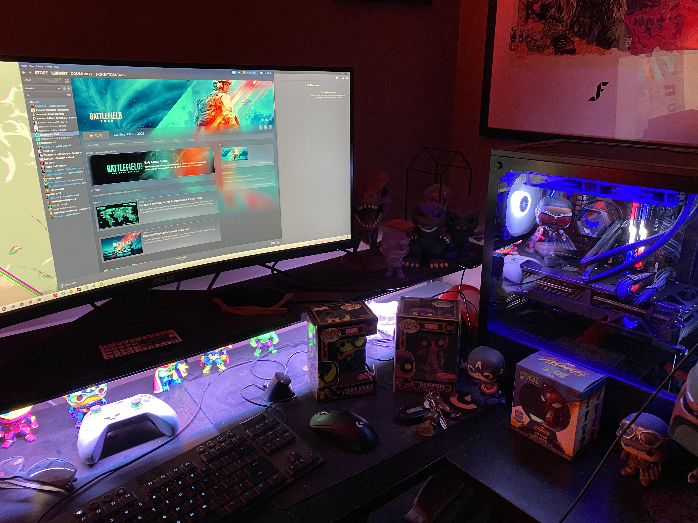
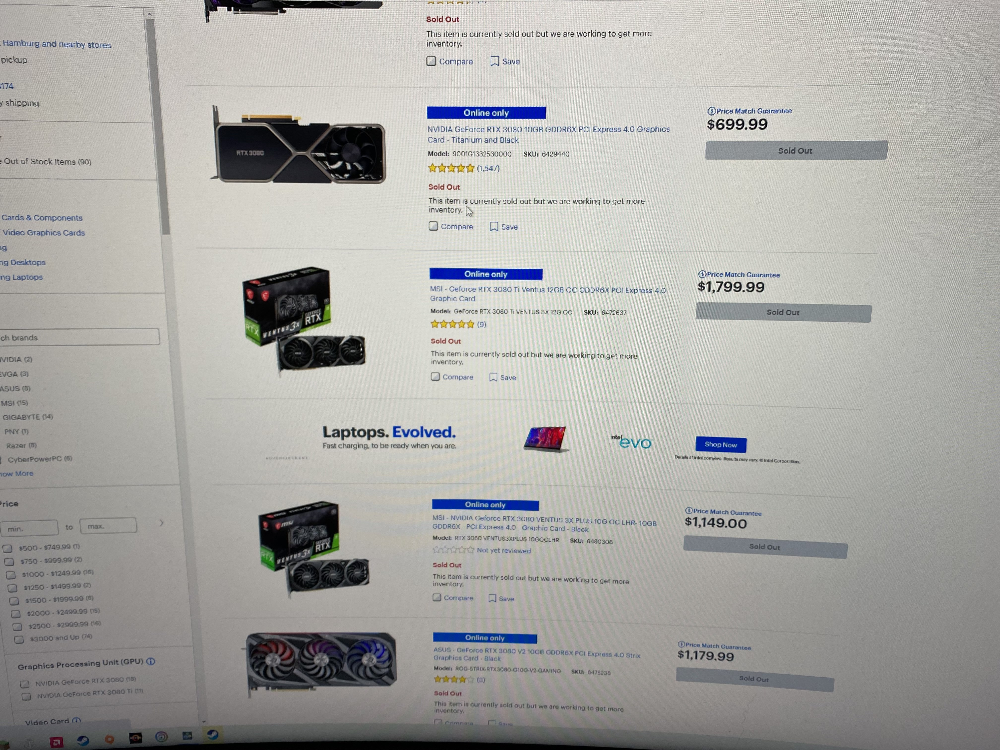
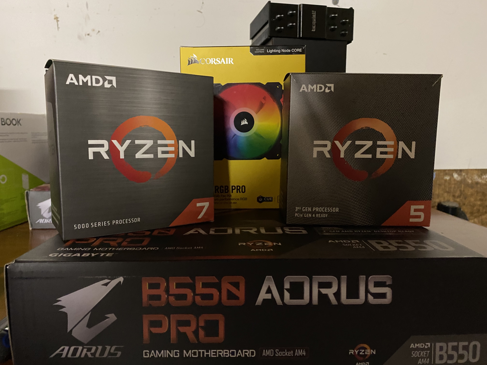
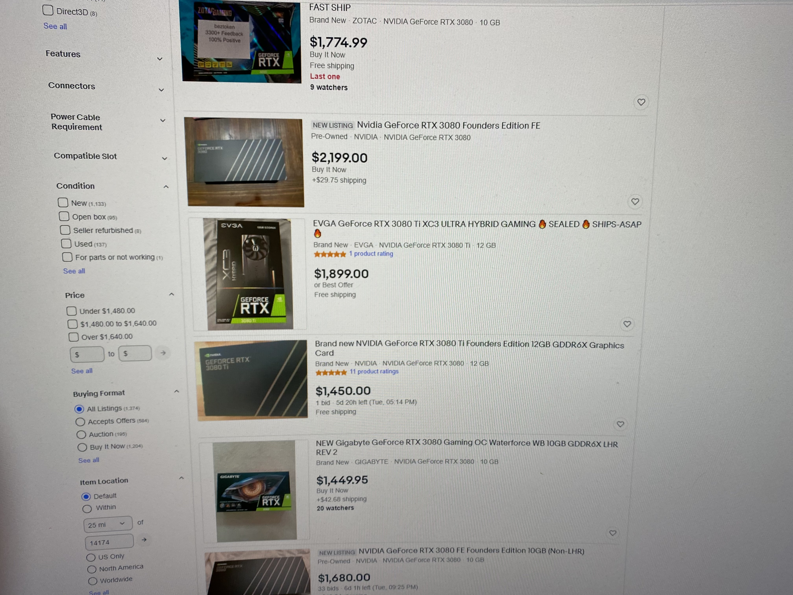

As we are accustomed to by now, the Coronavirus has changed a lot in our everyday lives. From masking up to working from home, we have all been affected in some way or another over the past year and a half. The same is true for the world’s economy, which was struck with massive slow downs on account of COVID-19. The world’s supply chain skidded to a halt, and is still trying to recover. This was due to a multitude of different reasons, like factories shutting down and truckers leaving the driving industry. 
For these, and many other compounding reasons, the technology industry has been experiencing a significant microchip shortage. Not only has this struck the technology industry, but it has been slowly trickling into others such as the automobile industry. This is because certain cars (mostly new) require microchips for their complex systems. As many have experienced, this has shaken the car market heavily. Prices on new and used cars have been skyrocketing.  To no one’s surprise, the computer industry has also been pummeled by these shortages. This has made acquiring new, fairly priced computers and components a nightmare for the average user and computer enthusiasts alike.
While the average PC user may have run into some trouble trying to pick out a laptop, computer hobbyists have been hit hard by these shortages. If the shortages weren’t putting enough pressure on, scalpers have been stirring the pot even more. Scalpers are individuals who buy popular items in bulk online to attempt to resell for more than retail price. Often, they target high value, popular items that may have limited stock. The computer component market was perfect for this, as it ticks all the boxes. “We were having difficulties finding graphics cards because of the chip shortage. We would search Best Buy, all over the place looking for these graphics cards, but everywhere was sold out,” says Mike Donner, a PC builder who uses his for music production.
One of the toughest components for builders to get their hands on is the graphics card, or Graphics Processing Unit. These cards render what you see on your computer screen and help split processes from the processor. Many gamers and hobbyists were trying to get their hands on the new series of GPUs from Nvidia, a well-known producer.  This new series came out on September 17, 2020, and has seen supply shortages ever since. In just minutes every card was sold out, and over the course of the months to follow, this trend would continue. Scalpers have been fighting against average consumers to buy precious stock, and have been utilizing bots to help them do so. Bots are automated programs that can buy products with little to no user input. This streamlines the checkout process so that scalpers can buy high quantities in seconds. “They have bots. They will go on the websites as soon as the GPUs are available, they’re faster than a human. They’ll snag these GPUs to sell,” says Marc Parent, a gamer and enthusiast.
A lot of folks wanted to upgrade their parts due to an increased need for higher processing power. “The old one was kind of getting outdated. My processor wasn’t good enough for the graphics card and the new games that are coming out,” says Marc. Many new games and programs are requiring and recommending higher end parts to effectively run their programs. This is obviously being impeded upon by the lack of stock for various computer parts.
This stock shortage is leading people to resort to other methods of acquiring these parts. “I would follow links on Twitter that would post live threads of when GPUs went live on each store. You would have to be really quick to click on the links, and you had to be fast typing in all your information,” Marc comments. “Another option was a queue system. On a GPU’s website, you basically join a waiting list. These times could be up to two to three months,” he continued. Another option was buying resale cards for higher prices. “I ended up resorting to StockX, and I found a graphics card that was generally going for maybe 500 dollars, but I had to settle for 800,” comments Mike, who purchased a resale card.
All in all, most are waiting for the market to stabilize after the last few years. Companies are projecting that stock may return to normal half-way through 2022. Until then, hobbyists and gamers like Mike and Marc may have to bite the bullet and settle for a higher price, “I’ll go online still, and check out Best Buy or NewEgg, and they’re still sold out.”